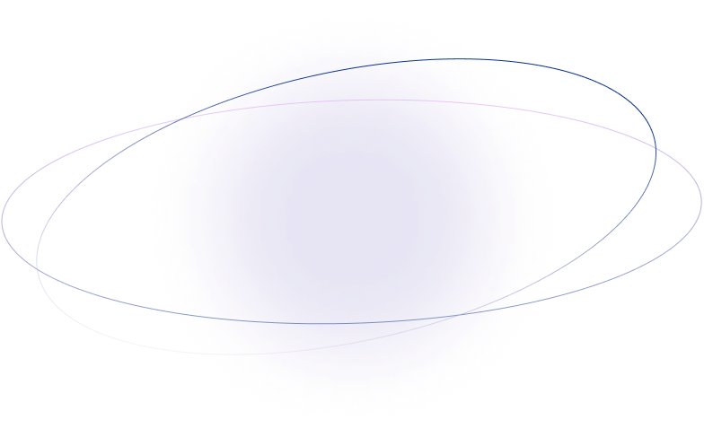

Releve le defi
des dora milaje
Les Dora Milaje sont de farouches guerrières d’élite. Elles constituent la garde rapprochée du Roi en personne et ont de nombreuses occasions de lui sauver la vie. Leur Générale, Okoyé est également la dirigeante des forces armées et des renseignements wakandais
Prouve ton talent d’espion et déchiffre cette réplique d’Okoyé écrite en Wakandais, et apprend par la même occasion la première valeur d’une Dora Milaje !
SI JE SUIS FIDELE C’EST A CE TRONE PEU IMPORTE QUI MONTE DESSUS
Voici la transcription de l'alphabet
A =A ; B =B ; C = C; D =D ; E = E ; F = F ; G = G ; H = H ; I = I ; J = J ; K = K ; L= L ; M = E ; N = N ; O = O; P = P ; Q = Q; R = R ; S = S; T = T ;U = U ; W = W ; X = X ; Y = Y ; Z = Z
Le savais tu ?
Plusieurs sources s’entendent pour dire que la lettre la plus utilisée en français est la lettre E. En pourcentage de fréquence, la lettre est utilisée à 14% dans une phrase. Et si tu regardais quel symbole revient le plus souvent ?